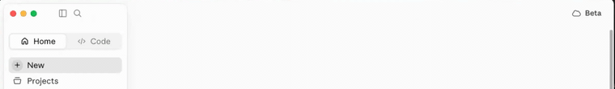
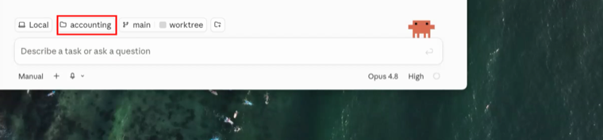
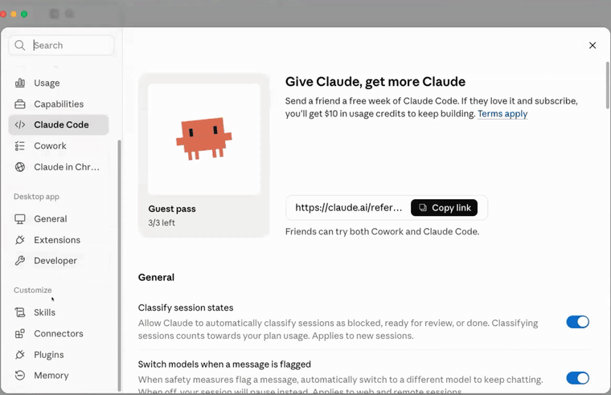
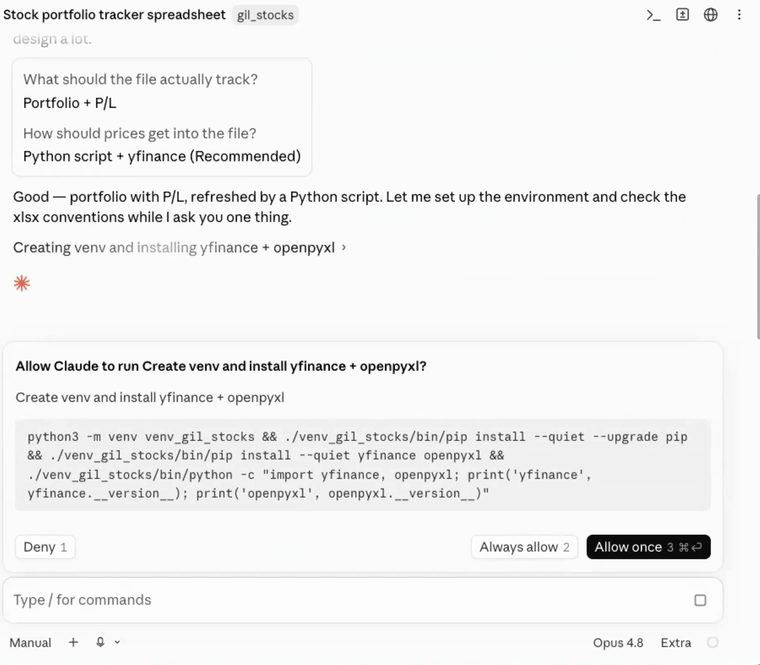
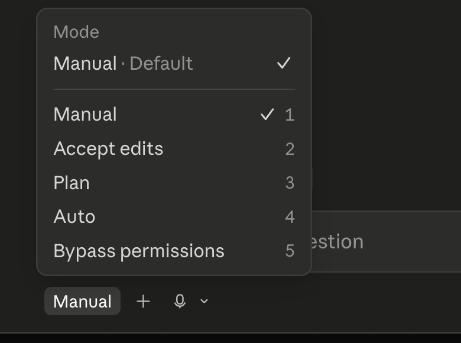

מדריך פשוט וידידותי להקמת סביבת העבודה לבניית סוכני AI. אין צורך בניסיון טכני קודם. אם משהו נתקע - זה בסדר גמור, נשלים יחד בתחילת המפגש.
כלי אחד להתקנה: אובסידיאן - המחברת החכמה שתשמש כזיכרון של המערכת. קלוד דסקטופ כבר מותקן אצלך, אז ראינו אותו יחד במפגש - ולמטה מחכה לך תזכורת מצולמת של בדיוק מה שעשינו. זה כל מה שצריך. שלב 2 למטה הוא טכני, הוא נעשה איתי במפגשים, ולא בטוח שתצטרך אותו בכלל.





שאלת אם הסוכן יכול לעשות דברים בלי בקרה. כל עוד המצב הוא Manual - כל פעולה במחשב מחייבת אישור שלך לפני שהיא קורית. ואם משהו לא מסתדר או לא נראה כמו בסרטונים - עצור וכתוב לי, נעבור על זה יחד.
פשוט תיקייה במחשב שאובסידיאן מנהל. כל מה שנכתוב שם הוא קבצים רגילים שלך, לא בענן של אף אחד. אתה הבעלים המלא של הזיכרון הזה.
הגדרת פרטיות אחת ששווה לעשות עכשיו, לפני שאנחנו עובדים על נתוני התיק שלך.
ההתקנות בשלב הזה הן Node.js (מנוע הרצה), Claude Code (הסוכן שבונה קוד ומסמכים), Git (מעקב אחרי שינויים), ו-VS Code (סביבת כתיבת קוד). זה עולם של שורת פקודה, והוא טכני בהרבה משלב 1.
רק אם מתחשק לך להציץ: מדריך התקנת Claude Code המלא (Windows + Mac)
אם החלטת לנסות ונתקעת - עצור ותכתוב לי. אין שום צורך להגיע מוכן לשלב הזה, ואין שום חיסרון אם לא נגעת בו.